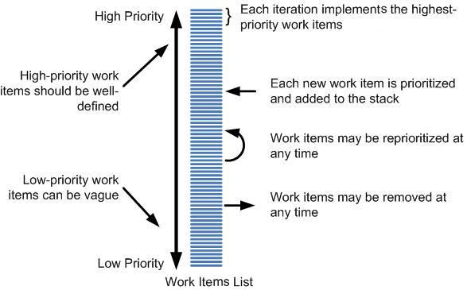

| Guideline: Managing Work Items |
 |
|
| Related Elements |
|---|
OverviewThe Artifact: Work Items List captures all scheduled work to be done within the project, as well as proposed work that may affect the product. Some of the work items may be implemented in this project, some of them may be implemented in a future project, and some of them may never be implemented. Some of the work items may still be poorly defined; therefore, it could represent a big chunk of work, requiring potentially several staff months of effort. As the priority of these work items increases, they are typically decomposed into smaller work items that represent specific and well-defined tasks that may take hours or days to address, see Micro-Increments. In other cases, specific and well-defined work items are created directly, representing, for example, a defect to be addressed, as Figure 1illustrates. Figure 1. Work Items List provides one prioritized list of scheduled and proposed work  A work item may represent work associated with a defect, enhancement request, change request, use case, scenario, user story, supporting requirement, stakeholder request, or anything else that captures a potential requirement or improvement to your system. A work item may reference any type of requirement or other useful information that guides you in what needs to be done. A big advantage with the Artifact: Work Items List is that it enables you to prioritize only one list containing all of the things that may need to be addressed, whether the work item represents work related to a requirement, enhancement, or defect. The one exception is that you should prioritize the risk list separately. Nothing in the project will get done if it is not represented or mapped to a work item. This means that all requirements, defect reports, and change requests have to be mapped to a work item at some stage. Also, a developer will not take on work that is not represented in a work item. Only work items need to be prioritized. This also means that tracking work items is a primary means of understanding the status of the project. There are two major types of work items:
Unscheduled work itemsMost work items are initially unscheduled, meaning that it has not yet been decided whether to do them and when to do them. Unscheduled work items should always represent something meaningful to deliver to stakeholders, such as a scenario to be detailed, designed, implemented, and tested. You may consider capturing the following data for such work items:
Scheduled work itemsAfter a work item has been assigned to an iteration, it becomes scheduled. You assign work items only to the current or next iteration. There is no point in assigning work items to a specific future iteration, because you cannot predict what a meaningful schedule will be more than an iteration in advance (see Guideline: Iteration Planning). The following additional attributes are useful for Scheduled work items:
This provides the information required to plan and manage an iteration. You can plan iterations by understanding effort involved, and you can manage iterations by tracking how much work is left to do (see Report: Iteration Burndown). Work item statesThe following states are useful for tracking work items:
You may choose another set of states, based on your needs. |
This program and the accompanying materials are made available under the |